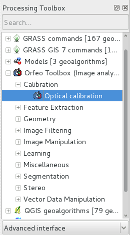

OTB Quickstart¶
ORFEO Toolbox library (OTB) is a high performance library for image processing targeted on remote sensing.
This Quick Start describes how to:
- Get metadata informations from an image
- Perform mathematical operations between image bands
- Open raster images with the application monteverdi, perform segmentation (mean-shift clustering) and visualize the result
- Perform supervised classification based on Support Vector Machine algorithm
The OTB applications provide lot’s of interesting tools which facilitate the manipulation of images. All these tools are available through:
- CLI (command line interface) : all applications can be called from a terminal starting with otbcli_ plus the application name
- GUI (a standalone graphical user interface in Qt) : the applications can be called from a terminal with the alias otbgui_ plus the application name. An other option is to use a small launcher (available in the menu -> Geospatial -> Spatial Tools -> OTB Launcher)
- QGIS plugin : available through the processing framework
- Sample data used in this quickstart can be found in :
- /home/user/data/north_carolina/rast_geotiffs
Contents
Display metadata informations in an image¶
You can get all the metadata informations contained in an image with the command : otbcli_ReadImageInfo The unique parameter is the Input image file name, for example:
otbcli_ReadImageInfo -in ortho_2001_t792_1m.tif
Calculator on image bands¶
The otbcli_otbBandMath provides an efficient way to perform mathematical operation on image bands. The syntax is quite simple, for example substrating two bands to study the image differences on the images lsat7_2002_10.tif and lsat7_2002_20.tif, just use the command:
otbcli_BandMath -il lsat7_2002_10.tif lsat7_2002_20.tif -out difference.tif -exp "im1b1-im2b1"
The application is able to perform complex mathematical operations over images (threshold, logarithmic rescaling...). This homebrewed digital calculator is also bundled with custom functions allowing to compute a full expression. For example, as remote sensing images measure physical values, it is possible to extract several indices with physical meaning like the NDVI (Normalized Difference Vegetation Index) for the vegetation. With the calculator you’re able to compute the NDVI on a multispectral sensors images by doing:
otbcli_BandMath -il lsat7_2002_30.tif lsat7_2002_40.tif -out ~/ndvi.tif -exp "ndvi(im1b1,im2b1)"
The file lsat7_2002_30.tif corresponds to Landsat 7 red channel, lsat7_2002_40.tif corresponds to Near Infra-Red.
You can then visualize input images and the result with the command
monteverdi lsat7_2002_30.tif lsat7_2002_40.tif ~/ndvi.tif
Pixel based classification¶
The classification in the application framework provides a supervised pixel-wise classification chain based on learning from multiple images, and using one specified machine learning method like SVM, Bayes, KNN, Random Forests, Artificial Neural Network, and others...(see application help of TrainImagesClassifier for further details about all the available classifiers). It supports huge images through streaming and multi-threading. The classification chain performs a training step based on the intensities of each pixel as features. Please note that all the input images must have the same number of bands to be comparable.
To discover this application, you can use the command
otbgui_TrainImagesClassifier
Perform segmentation¶
The OTB Segmentation application allows to produce a raster segmentation output with different algorithms and to scale up to large raster by producing vector outputs that you can import in a GIS software. There are four segmentation methods available in the application:
- Mean-Shift
- Watershed (ITK implementation)
- Connected-Components
- Morphological profiles
You can test the segmentation with these commands:
- Creation of a multichannel Red-Green-Blue-Nir image
otbcli_ConcatenateImages -il lsat7_2002_30.tif lsat7_2002_20.tif lsat7_2002_10.tif lsat7_2002_40.tif -out ~/lsat7_rgbn.tif
- Apply segmentation
otbcli_Segmentation -in ~/lsat7_rgbn.tif -filter meanshift -mode raster -mode.raster.out ~/segmentation.tif
- Generate colors instead of labels
otbcli_ColorMapping -in ~/segmentation.tif -out ~/segmentation_colored.tif -method image -method.image.in ~/lsat7_rgbn.tif
Moreover the application can work in two different modes:
- Raster mode: allows to segment a small image and produces a raster where each
component of the segmentation is labeled with a unique integer
- Vector mode: segment larger images and produces a vector file where each
segment of the segmentation is represented by a polygon

OTB includes also a framework to perform tile-wise segmentation of very large image with theoretical guarantees of getting identical results to those without tiling called LSMS.
OTB in QGis¶
The same set of OTB applications can also be used from the Processing -> Toolbox menu in QGis. The applications are sorted by tag.

Developing with OTB¶
If you want to use the OTB library and compile your C++ code inside OSGeo-Live, you will need to install development package libotb-dev and libqt4-dev . Also check that cmake is installed. The OTB_DIR location should be found automatically (usually in /usr/lib/x86_64-linux-gnu/cmake/OTB-...). In your CMake configuration, you should link the libraries in the variable OTB_LIBRARIES. More information can be found in the SoftwareGuide.
What Next?¶
OTB Software Guide
The main source of information is the OTB Software Guide. This is a comprehensive guide which comprises about 600 pages, detailing the steps to install OTB and use it. Most of the classes available are heavily illustrated with results from real remote sensing processing.
OTB CookBook
A guide for OTB-Applications and Monteverdi dedicated for non-developers is also available.This guide is composed of a brief tour of of OTB-Applications and Monteverdi, followed by a set of recipes to perform usual remote sensing tasks with both tools.
OTB Tutorials
Follow the tutorials to learn more about OTB.
OTB Applications documentation
See also detailed documentation about OTB applications
OTB courses with Pleiades images to learn how to use OTB applications and Monteverdi
Follow the courses to learn more about OTB (see section Tutorials).